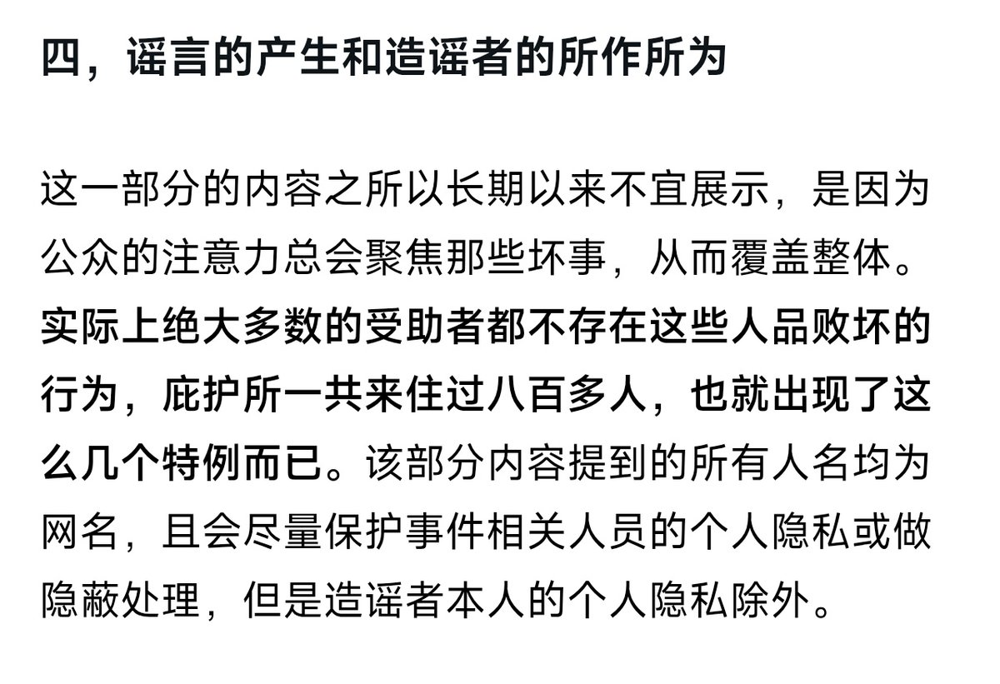

寒涟漪
@HANLIANYI331
@General_5339 我这段话的重点并非是“以德报怨”，而是“不因为某一部分人品恶劣的受助者而去放弃大多数善良的受助者”。说白了就是“把每一个受助者当做个体看待，而不是把他们看作是一个整体”

寒涟漪
@HANLIANYI331
https://t.co/QG6R7Kr91h
火星机械神教大贤者 贝利撒留.考尔
@General_5339
@HANLIANYI331 建议你复习一下以德报怨和子路受牛的典故，你这么做本质上只是为了感动你自己而已，而且会让其他人对帮助被网瘾学校迫害的人这件事望而生畏。
因为一个正常人去帮助别人然后被别人背刺之后他产生愤怒的情绪才是合理的，如果他甘之若饴那说明他有精神病。